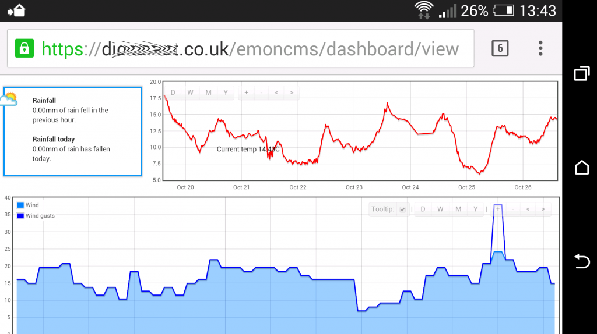

For anyone who's interested, this is the process I took to enable https access for my Raspberry Pi and protect emoncms.
SSL Certficates
SSL certificates can be quite expensive, but StartSSL offer class 1 certificates free, and which on most browsers do not flag up the 'untrusted site' warning. However, I found their website wizard quite difficult to follow, and this guide helped me sort it out
NOTE: ensure that you download the sha256 intermediate certificate, and not the sha1 intermediate certificate as prompted in the StartCom toolbox. (see this article).
Port forwarding
Ensure that port 443 is open in your router
Configuration
Once you have your certificates, edit your SSL Virtual Host file;
sudo nano /etc/apache2/sites-available/default-ssl
In the section <VirtualHost _default_:443> add 'ServerName yourdomain.co.uk' just under 'ServerAdmin'.
In the section <Directory /> change 'AllowOverride None' to 'AllowOverride All'
In section <Directory /var/www/> change 'AllowOverride None' to 'AllowOverride All'
Further down, enter the name of your 3 certificates against the proposed locations, un-commenting #SSLCertificateChainFile (the SSLCertificateChainFile is the sub.class1.server.ca.pem certificate that is downloaded from StartSSL).
Save the file, and then copy the respective certificates to the locations specified in the default-ssl file, and chmod both your SSLCertificateFile & SSLCertificateKeyFile to 400 to ensure that they are secure.
So far, none of the changes will be evident to the system because the default-ssl file is not loaded and SSL has not been activated, so to do so;
sudo a2ensite default-ssl sudo a2enmod ssl sudo /etc/init.d/apache2 restart
Now navigate to https://yourdomain.co.uk and hopefully you should have https access!
If however, you want to return things back to how they were before the changes above;
sudo a2dissite default-ssl sudo a2dismod ssl sudo /etc/init.d/apache2 restart
emoncms & emonhub
Emoncms and emonhub should work under https without any changes to the system, however if you have any pre-existing dashboards with graphs, they will have been saved to the dashboard using the absolute URL that you used when saving the graph (http not https), so you have two options;
Either, edit the graph within the dashboard and save it back (it will then use the https URL), or as I did edit your MYSQL dashboard column, adding a 's' to any http URL's.
Restricting site to https only
sudo nano /etc/apache2/sites-available/default
Add a Rewrite rule within the section <VirtualHost *:80> and underneath 'DocumentRoot', add:
RewriteEngine on
RewriteCond %{SERVER_PORT} !^443$
RewriteCond %{REMOTE_ADDR} !127\.[0-9]{1,3}\.[0-9]{1,3}\.[0-9]{1,3}
RewriteRule ^(.*) https://%{SERVER_NAME}%{REQUEST_URI} [R=301,L]..to redirect port 80 requests to https, and yet allow emonhub to communicate via localhost .
Save the 'default' file and restart apache as per above command.
No guarantees! this is my learning curve of adding an extra layer of security to my raspberry pi, if anyone has any suggestions how to improve/add to this, then please add it below or PM me.
Paul

Re: Securing a system with SSL certificates - https security
Another option to stop access to :80 is to just disable this in your router - won't auto-redirect like you current config does, but this works for me.
Re: Securing a system with SSL certificates - https security
BTW - thanks for the notes on how you got this working - I spent most of last night trawling Google and have managed to setup SSL certs for my Apache server. All working pretty well - the only issue now is the blank graphs - so I need to get into those MySQL tables and update the paths...
Re: Securing a system with SSL certificates - https security
Thanks for the guide Paul, very helpful indeed.
Re: Securing a system with SSL certificates - https security
I ran a site SSL security check using Qualys SSL Labs online scan facility on the above changes, and sadly, only received a 'C' rating, however by disabling SSLv3 on my server, thereby removed the 'Poodle' exploit weakness, my assessment improved to 'A-'. See this link.
This is probably the highest grade that can be achieved using Apache 2.2, as Apache 2.4 is required to introduce 'forward secrecy, which is not currently available for Wheezy.
To disable SSLv3;
and add
..just beneath the SSL certificate locations.
Paul
Re: Securing a system with SSL certificates - https security
There's a lot of information about securing both servers and browsers against POODLE here.
Re: Securing a system with SSL certificates - https security
Added information to main post above regarding using sha256 intermediate certificate in preference to the depreciated sha1 certificate, to improve site security.
Paul